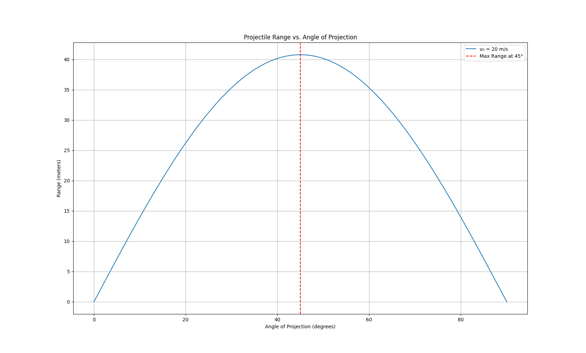

Problem 1
Mechanics – Problem 1
Investigating the Range as a Function of the Angle of Projection
📌 Motivation
Projectile motion, while seemingly simple, offers a rich playground for exploring fundamental principles of physics. The problem is straightforward: analyze how the range of a projectile depends on its angle of projection. Yet, beneath this simplicity lies a complex and versatile framework.
What makes this topic particularly compelling is the number of free parameters involved in these equations, such as initial velocity, gravitational acceleration, and launch height. These parameters give rise to a diverse set of solutions that can describe a wide array of real-world phenomena, from the arc of a soccer ball to the trajectory of a rocket.
🧠 1. Theoretical Foundation
Derivation of Equations of Motion
Starting from Newton’s second law:
-
Horizontal motion (no acceleration):
[ x(t) = v_0 \cos(\theta) t ] -
Vertical motion (constant downward acceleration):
[ y(t) = v_0 \sin(\theta) t - \frac{1}{2} g t^2 ]
Where:
- \( v_0 \): initial velocity
- \( \theta \): angle of projection
- \( g \): gravitational acceleration
- \( x(t), y(t) \): position at time \( t \)
Time of Flight
The projectile hits the ground when \( y(t) = 0 \) (assuming launch and landing heights are equal):
Horizontal Range
Thus, the range depends on: - \( v_0^2 \): quadratic in initial velocity - \( \sin(2\theta) \): maximized at \( \theta = 45^\circ \) - Inversely proportional to \( g \)
📊 2. Analysis of the Range
Python Simulation
import numpy as np
import matplotlib.pyplot as plt
# Constants
g = 9.81 # m/s^2
v0 = 20 # m/s
# Angles from 0 to 90 degrees
angles = np.linspace(0, 90, 500)
angles_rad = np.radians(angles)
# Range calculation
R = (v0**2) * np.sin(2 * angles_rad) / g
# Plotting
plt.figure(figsize=(10, 6))
plt.plot(angles, R, label=f'v₀ = {v0} m/s')
plt.xlabel('Angle of Projection (degrees)')
plt.ylabel('Range (m)')
plt.title('Projectile Range vs. Angle of Projection')
plt.grid(True)
plt.legend()
plt.axvline(45, color='red', linestyle='--', label='Maximum Range at 45°')
plt.legend()
plt.show()

📈 Observations:
- Maximum range occurs at \( \theta = 45^\circ \)
- Symmetry: The range at angle \( \theta \) is the same as at \( 90^\circ - \theta \)
- Increasing \( v_0 \) increases the entire curve quadratically
- Increasing \( g \) (e.g., on different planets) compresses the range
🌍 3. Practical Applications
- Sports: Optimizing throw angles in javelin, soccer, basketball
- Engineering: Launching projectiles in defense or construction
- Astrophysics: Trajectories of space probes under planetary gravity
- Education: Classic introductory example of 2D motion
💻 4. Implementation
The included Python script simulates the range as a function of angle and allows for parameter variation:
- Change
v0to observe effects of initial speed - Modify
gto simulate other planets (e.g., Moon or Mars) - Extend to 3D or add drag force for realism
⚠️ 5. Limitations and Extensions
Limitations:
- Neglects air resistance
- Assumes level ground
- Assumes constant gravitational field
- Ignores spin or shape of projectile
Possible Extensions:
- Add quadratic drag: \( F_{\text{drag}} \propto v^2 \)
- Model variable terrain: \( y(t) \ne 0 \) at impact
- Vary initial height: \( y_0 > 0 \)
📎 Conclusion
Projectile motion offers both analytical beauty and practical relevance.
The range as a function of angle exhibits a clear, elegant dependence on \( \sin(2\theta) \), and this can be extended in many ways to model real-world systems more closely.